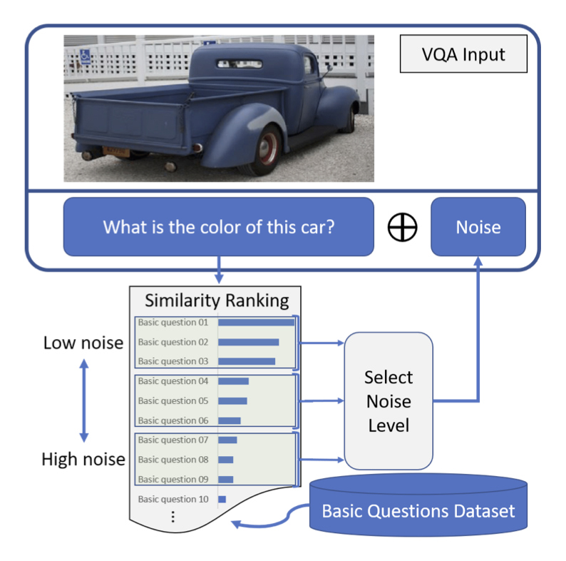
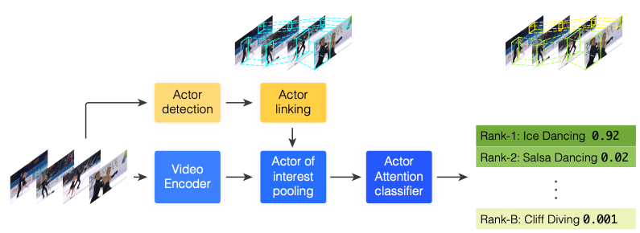

A Novel Framework for Measuring the Robustness of Visual QA Models
Jia-Hong Huang, Cuong Duc Dao, Modar Alfadly, Bernard Ghanem
Oral paper, The Thirty-Third AAAI Conference on Artificial
Intelligence (AAAI-19)

Deep neural networks have been playing an essential role in many computer vision tasks including Visual
Question Answering (VQA). Until recently, the study of their accuracy was the main focus of research but
now there is a trend toward assessing the robustness of these models against adversarial attacks by
evaluating their tolerance to varying noise levels. In VQA, adversarial attacks can target the image
and/or the proposed main question and yet there is a lack of proper analysis of the later. In this work,
we propose a flexible framework that focuses on the language part of VQA that uses semantically relevant
questions, dubbed basic questions, acting as controllable noise to evaluate the robustness of VQA models.
We hypothesize that the level of noise is positively correlated to the similarity of a basic question to
the main question. Hence, to apply noise on any given main question, we rank a pool of basic questions
based on their similarity by casting this ranking task as a LASSO optimization problem. Then, we propose a
novel robustness measure, R_score, and two large-scale basic question datasets (BQDs) in order to
standardize robustness analysis for VQA models.
Guess where? Actor-supervision for Spatiotemporal Action Localization
Victor Escorcia, Cuong Dao, Mihir Jain, Bernard Ghanem, Cees
Snoek
Computer Vision and Image Understanding Journal

This paper addresses the problem of spatiotemporal localization of actions in videos. Compared to leading
approaches, which all learn to localize based on carefully annotated boxes on training video frames, we
adhere to a solution only requiring video class labels. We introduce an actor-supervised architecture that
exploits the inherent compositionality of actions in terms of actor transformations, to localize actions.
We make two contributions. First, we propose actor proposals derived from a detector for human and
non-human actors intended for images, which are linked over time by Siamese similarity matching to account
for actor deformations. Second, we propose an actor-based attention mechanism enabling localization from
action class labels and actor proposals. It exploits a new actor pooling operation and is end-to-end
trainable. Experiments on four action datasets show actor supervision is state-of-the-art...
Maritime Vessel Images Classification using Deep Convolutional Neural
Networks
Cuong Dao-Duc, Hua Xiaohui, Olivier Morère
Proceedings of the Sixth International Symposium on
Information and Communication Technology (SoICT 2015)
The ability to identify maritime vessels and their type is an important component of modern maritime
safety and security. In this work, we present the application of deep convolutional neural networks to the
classification of maritime vessel images. We use the AlexNet deep convolutional neural network as our base
model and propose a new model that is twice smaller then the AlexNet. We conduct experiments on different
configurations of the model on commodity hardware. We comparatively evaluate and analyse the performance
of different configurations the model. We measure the top-1 and top-5 accuracy rates. The contribution of
this work is the implementation, tuning and evaluation of automatic image classifier for the specific
domain of maritime vessels with deep convolutional neural networks under the constraints imposed by
commodity hardware and size of the image collection.